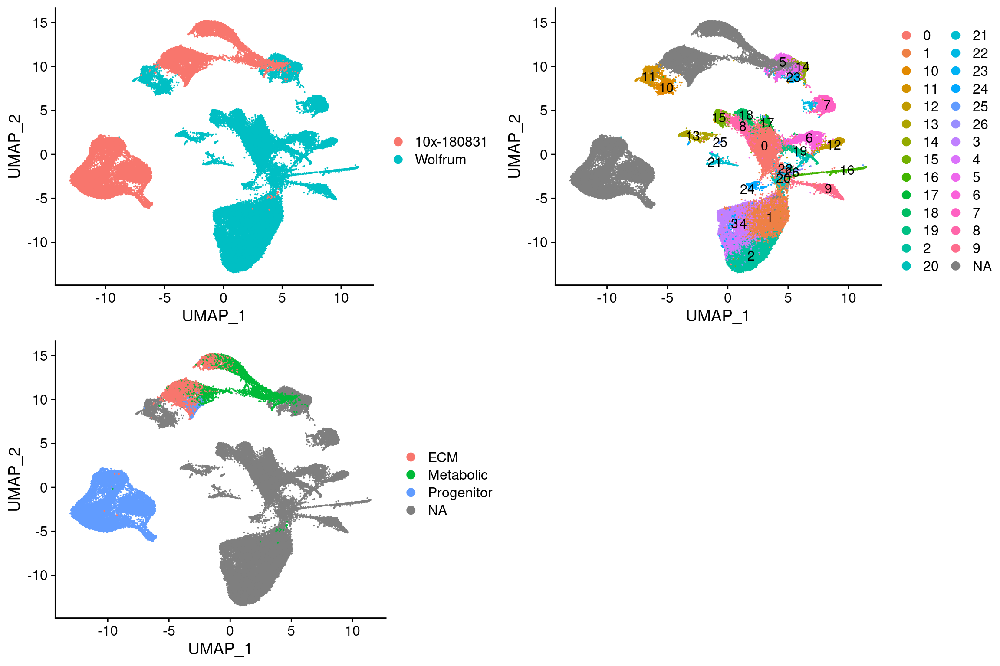
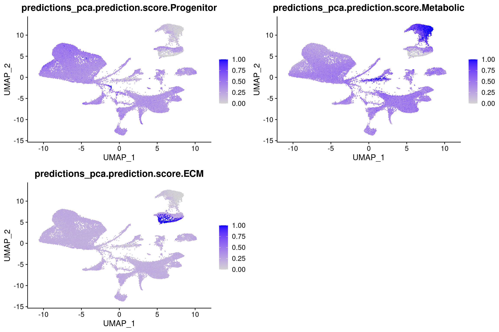
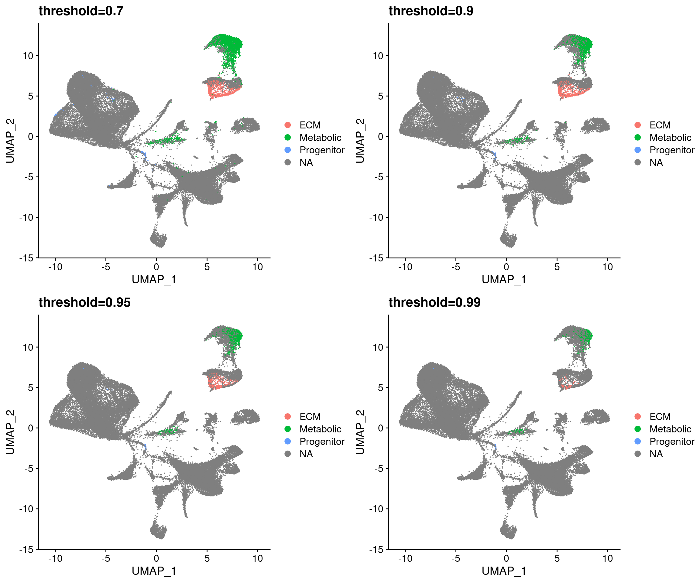
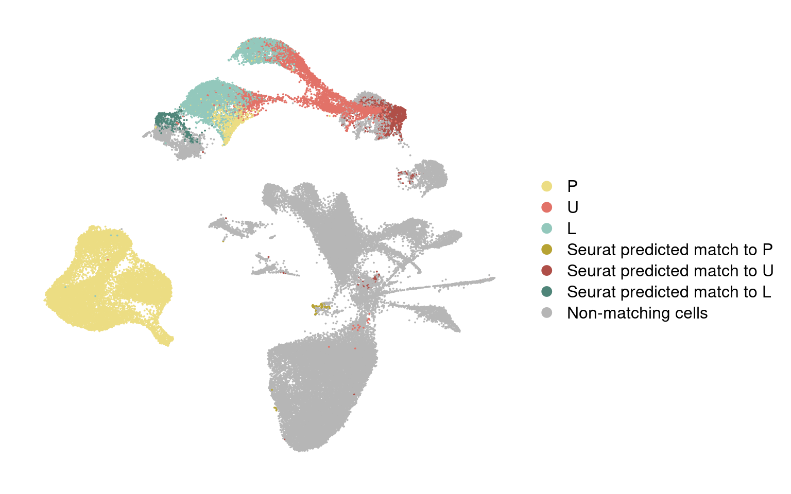
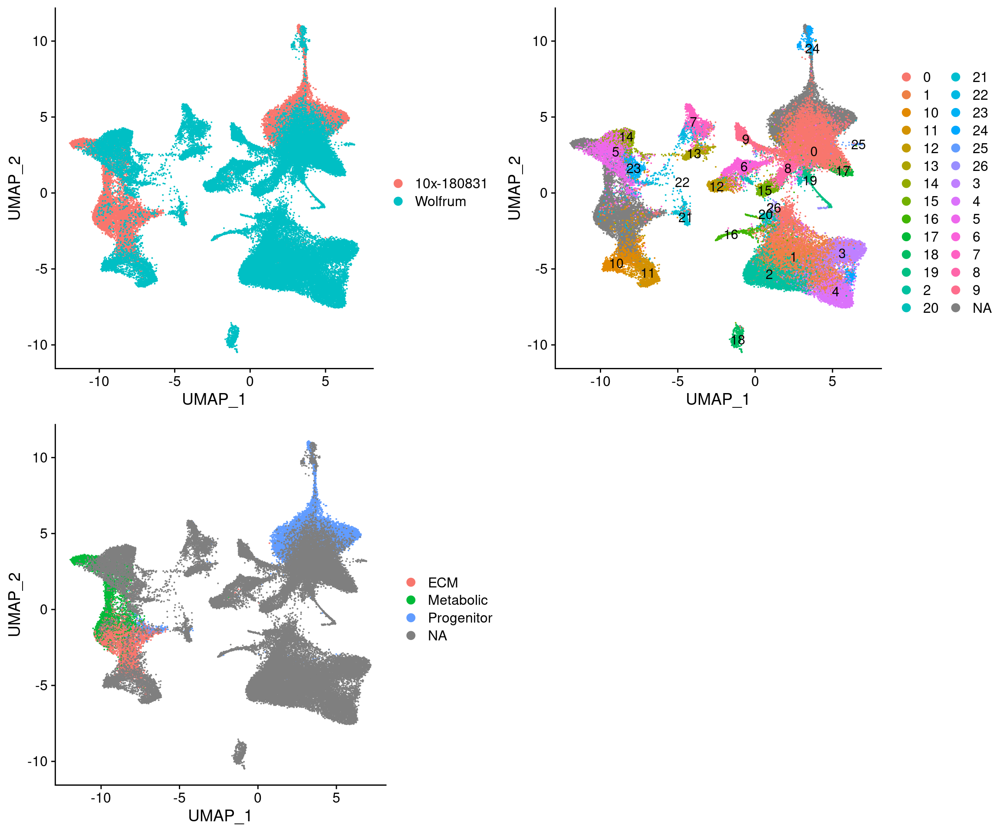
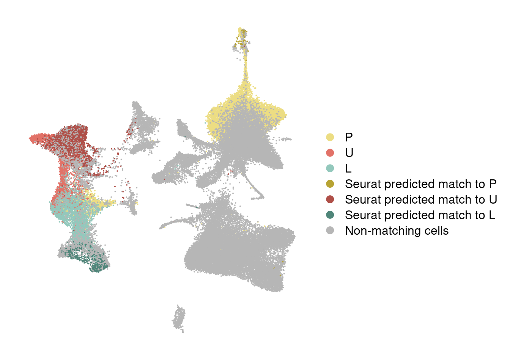
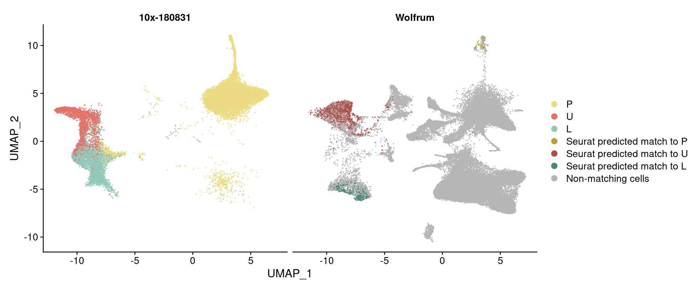
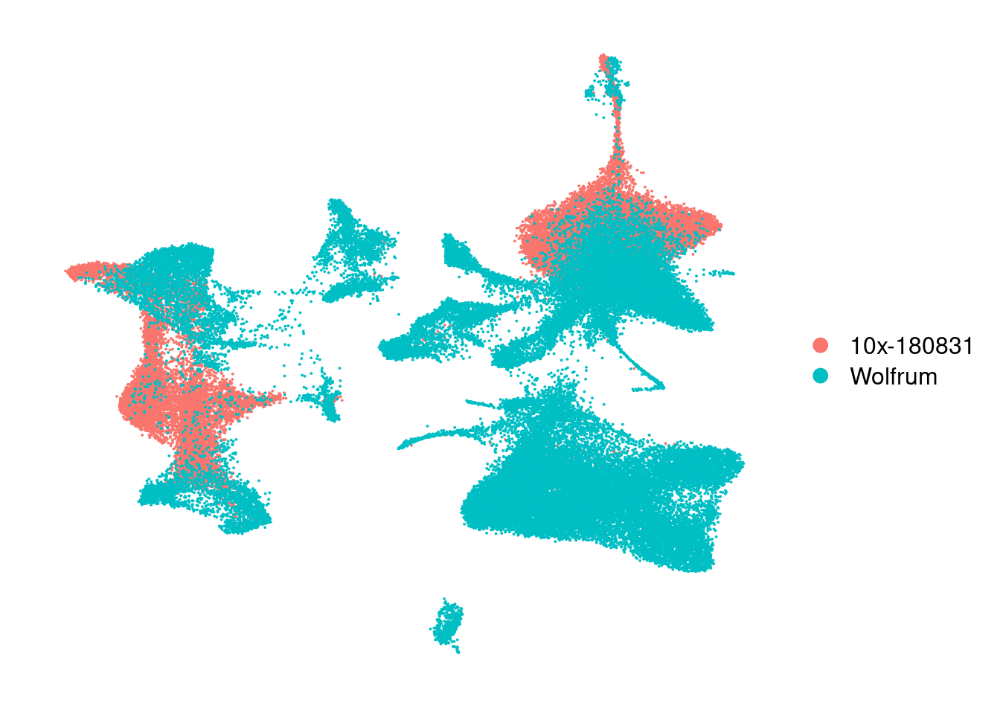
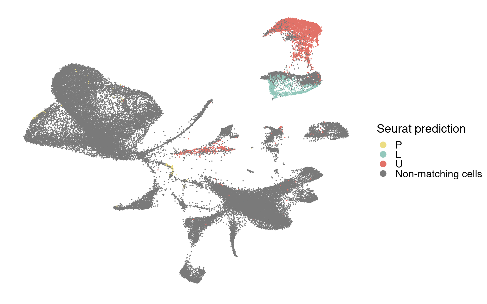
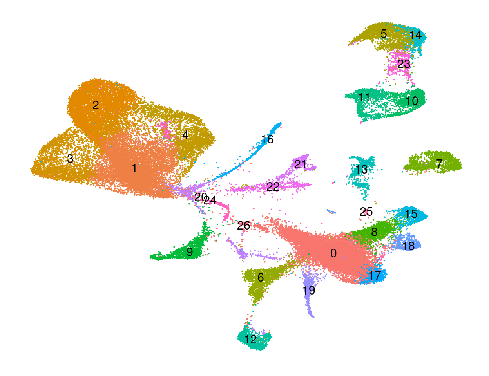

Last updated: 2020-03-23
Checks: 6 1
Knit directory: 10x-adipocyte-analysis/
This reproducible R Markdown analysis was created with workflowr (version 1.6.0). The Checks tab describes the reproducibility checks that were applied when the results were created. The Past versions tab lists the development history.
Great! Since the R Markdown file has been committed to the Git repository, you know the exact version of the code that produced these results.
Great job! The global environment was empty. Objects defined in the global environment can affect the analysis in your R Markdown file in unknown ways. For reproduciblity it’s best to always run the code in an empty environment.
The command set.seed(20181026) was run prior to running the code in the R Markdown file. Setting a seed ensures that any results that rely on randomness, e.g. subsampling or permutations, are reproducible.
Great job! Recording the operating system, R version, and package versions is critical for reproducibility.
Nice! There were no cached chunks for this analysis, so you can be confident that you successfully produced the results during this run.
Using absolute paths to the files within your workflowr project makes it difficult for you and others to run your code on a different machine. Change the absolute path(s) below to the suggested relative path(s) to make your code more reproducible.
| absolute | relative |
|---|---|
| /projects/pytrik/sc_adipose/analyze_10x_fluidigm/10x-adipocyte-analysis/output/seurat_objects/wolfrum/wolfrum.180831.integrated.rds | output/seurat_objects/wolfrum/wolfrum.180831.integrated.rds |
Great! You are using Git for version control. Tracking code development and connecting the code version to the results is critical for reproducibility. The version displayed above was the version of the Git repository at the time these results were generated.
Note that you need to be careful to ensure that all relevant files for the analysis have been committed to Git prior to generating the results (you can use wflow_publish or wflow_git_commit). workflowr only checks the R Markdown file, but you know if there are other scripts or data files that it depends on. Below is the status of the Git repository when the results were generated:
Ignored files:
Ignored: analysis/figure/
Ignored: code/.Rhistory
Ignored: figures/
Ignored: output/bulk_analysis/
Ignored: output/demuxlet/
Ignored: output/harmony/
Ignored: output/liger/
Ignored: output/markergenes/
Ignored: output/monocle/
Ignored: output/seurat_objects/
Ignored: output/velocyto/
Ignored: output/wgcna/
Ignored: tables/
Untracked files:
Untracked: .rstudio_old10/
Untracked: 10x-adipocyte-analysis-copy.Rproj
Untracked: analysis/.ipynb_checkpoints/10x-180831_harmony_palantir-checkpoint.ipynb
Untracked: analysis/.ipynb_checkpoints/velocyto_notebook_180831-checkpoint.ipynb
Untracked: analysis/wolfrum_integration.nb.html
Untracked: analysis/wolfrum_liger.Rmd
Untracked: analysis/wolfrum_liger.nb.html
Untracked: code/BEAM-heatmaps.R
Untracked: code/BEAM_gsea.R
Untracked: code/__pycache__/
Untracked: code/colors.R
Untracked: code/convert_raw_data_to_csv_harmony.R
Untracked: code/harmony.py
Untracked: code/run_monocle_on_wolfrum180831.R
Untracked: code/test.csv
Unstaged changes:
Deleted: 10x-adipocyte-analysis.Rproj
Deleted: analysis/velocyto_notebook_180504.ipynb
Deleted: analysis/velocyto_notebook_180831.ipynb
Modified: analysis/vijay_U-L-branch-markers.Rmd
Modified: analysis/vijay_analysis.Rmd
Modified: analysis/vijay_analysis.nb.html
Modified: analysis/wolfrum-scmap.Rmd
Modified: analysis/wolfrum_analysis.Rmd
Deleted: code/REMOVE/find-brown-sample-markers-180504-REMOVE.R
Deleted: code/REMOVE/find-white-sample-markers-180504-REMOVE.R
Deleted: code/REMOVE/get-genes-monocle-180831-REMOVE.R
Modified: code/compute-genelists-monocle-depots.R
Modified: code/find-depot-markers-180504.R
Modified: code/find-markers.R
Modified: code/preprocess-data.R
Modified: code/run-alignment.R
Modified: code/run-monocle.R
Modified: code/velocyto_preprocess.py
Note that any generated files, e.g. HTML, png, CSS, etc., are not included in this status report because it is ok for generated content to have uncommitted changes.
These are the previous versions of the R Markdown and HTML files. If you’ve configured a remote Git repository (see ?wflow_git_remote), click on the hyperlinks in the table below to view them.
| File | Version | Author | Date | Message |
|---|---|---|---|---|
| Rmd | cfb1146 | Pytrik Folkertsma | 2020-03-23 | Moved integration to separate notebook |
library(Seurat)
library(SeuratWrappers)
Attaching package: 'SeuratWrappers'The following objects are masked from 'package:Seurat':
ALRAChooseKPlot, RunALRAlibrary(monocle)Loading required package: MatrixLoading required package: BiobaseLoading required package: BiocGenericsLoading required package: parallel
Attaching package: 'BiocGenerics'The following objects are masked from 'package:parallel':
clusterApply, clusterApplyLB, clusterCall, clusterEvalQ,
clusterExport, clusterMap, parApply, parCapply, parLapply,
parLapplyLB, parRapply, parSapply, parSapplyLBThe following objects are masked from 'package:Matrix':
colMeans, colSums, rowMeans, rowSums, whichThe following objects are masked from 'package:stats':
IQR, mad, sd, var, xtabsThe following objects are masked from 'package:base':
anyDuplicated, append, as.data.frame, basename, cbind, colMeans,
colnames, colSums, dirname, do.call, duplicated, eval, evalq,
Filter, Find, get, grep, grepl, intersect, is.unsorted, lapply,
lengths, Map, mapply, match, mget, order, paste, pmax, pmax.int,
pmin, pmin.int, Position, rank, rbind, Reduce, rowMeans, rownames,
rowSums, sapply, setdiff, sort, table, tapply, union, unique,
unsplit, which, which.max, which.minWelcome to Bioconductor
Vignettes contain introductory material; view with
'browseVignettes()'. To cite Bioconductor, see
'citation("Biobase")', and for packages 'citation("pkgname")'.Loading required package: ggplot2Loading required package: VGAMLoading required package: stats4Loading required package: splinesLoading required package: DDRTreeLoading required package: irlbalibrary(cowplot)
********************************************************Note: As of version 1.0.0, cowplot does not change the default ggplot2 theme anymore. To recover the previous behavior, execute:
theme_set(theme_cowplot())********************************************************library(dplyr)
Attaching package: 'dplyr'The following object is masked from 'package:Biobase':
combineThe following objects are masked from 'package:BiocGenerics':
combine, intersect, setdiff, unionThe following objects are masked from 'package:stats':
filter, lagThe following objects are masked from 'package:base':
intersect, setdiff, setequal, unionlibrary(tidyr)
Attaching package: 'tidyr'The following object is masked from 'package:VGAM':
fillThe following objects are masked from 'package:Matrix':
expand, pack, unpacklibrary(knitr)
library(kableExtra)
Attaching package: 'kableExtra'The following object is masked from 'package:dplyr':
group_rowslibrary(DT)
Attaching package: 'DT'The following object is masked from 'package:Seurat':
JSlibrary(harmony)Loading required package: Rcppdata_180831 <- readRDS('output/seurat_objects/180831/10x-180831-S3')#anchors <- FindIntegrationAnchors(object.list = list(wolfrum, data_180831), dims = 1:20)
#integrated <- IntegrateData(anchorset = anchors, dims = 1:20)
#saveRDS(integrated, '/projects/pytrik/sc_adipose/analyze_10x_fluidigm/10x-adipocyte-analysis/output/seurat_objects/wolfrum/wolfrum.180831.integrated.rds')
integrated <- readRDS('output/seurat_objects/wolfrum/wolfrum.180831.integrated.rds')
integrated@meta.data['dataset'] <- '10x-180831'
integrated@meta.data[which(is.na(integrated@meta.data$branch)), 'dataset'] <- 'Wolfrum'
plot_grid(
UMAPPlot(integrated, group.by='dataset'),
UMAPPlot(integrated, group.by='seurat_clusters', label=T),
UMAPPlot(integrated, group.by='branch'), ncol=2
)Warning: Using `as.character()` on a quosure is deprecated as of rlang 0.3.0.
Please use `as_label()` or `as_name()` instead.
This warning is displayed once per session.
These results also confirm that the L branch is closest to cluster 11 and U is closest to the U branch.
wolfrum.predicted_labels <- readRDS('output/seurat_objects/wolfrum/wolfrum.predicted_labels_180831.rds')Used pca as dimred for FindTransferAnchors and IntegrateData.
plot_grid(
FeaturePlot(wolfrum.predicted_labels, features='predictions_pca.prediction.score.Progenitor'),
FeaturePlot(wolfrum.predicted_labels, features='predictions_pca.prediction.score.Metabolic'),
FeaturePlot(wolfrum.predicted_labels, features='predictions_pca.prediction.score.ECM'), ncol=2
)
For all predictions, change predicted id to NA if max score is below a certain threshold.
assign_labels <- function(colname, threshold=0.5){
pred_ids <- unlist(as.vector(apply(wolfrum.predicted_labels@meta.data[,c(paste(colname,'.prediction.score.max', sep=''), paste(colname, '.predicted.id', sep=''))], 1, function(x){
if (x[[1]] < threshold){
return(NA)
} else{
return(x[[2]])
}
})))
return(pred_ids)
}
for (col in c('predictions_pca')){
for (t in c(0.5, 0.7, 0.9, 0.95, 0.99)){
preds <- assign_labels(col, t)
wolfrum.predicted_labels <- AddMetaData(wolfrum.predicted_labels, preds, col.name=paste(col, 'predicted_label', t, sep='.'))
}
}plot_grid(
UMAPPlot(wolfrum.predicted_labels, group.by='predictions_pca.predicted_label.0.7') + ggtitle('threshold=0.7'),
UMAPPlot(wolfrum.predicted_labels, group.by='predictions_pca.predicted_label.0.9') + ggtitle('threshold=0.9'),
UMAPPlot(wolfrum.predicted_labels, group.by='predictions_pca.predicted_label.0.95') + ggtitle('threshold=0.95'),
UMAPPlot(wolfrum.predicted_labels, group.by='predictions_pca.predicted_label.0.99') + ggtitle('threshold=0.99'),
ncol=2
)
Color predictions in integrated dataset
integrated@meta.data['branch_labels_integrated'] <- wolfrum.predicted_labels@meta.data$predictions_pca.predicted_label.0.9[match(rownames(integrated@meta.data), rownames(wolfrum.predicted_labels@meta.data))]
integrated@meta.data['branch_labels_integrated'] <- unlist(lapply(integrated@meta.data$branch_labels_integrated, function(x){
if (is.na(x)){
return('Non-matching cells')
} else {
if (x == 'Progenitor'){
return('Seurat predicted match to P')
} else if (x == 'Metabolic') {
return('Seurat predicted match to U')
} else if (x == 'ECM') {
return('Seurat predicted match to L')
} else {
return('Non-matching cells')
}
}
}))
integrated@meta.data$branch_labels_integrated[match(rownames(data_180831@meta.data), rownames(integrated@meta.data))] <- data_180831@meta.data$State.labelscolormap <- c(
P='#ecdd83',
U='#e27268',
L='#93c8bc',
'Seurat predicted match to P'='#b7a333',
'Seurat predicted match to U'='#af4f48',
'Seurat predicted match to L'='#4f8579',
'Non-matching cells'='#b6b6b6'
)
integrated@meta.data$branch_labels_integrated <- factor(integrated@meta.data$branch_labels_integrated, levels = c('P', 'U', 'L', 'Seurat predicted match to P', 'Seurat predicted match to U', 'Seurat predicted match to L', 'Non-matching cells'))
DimPlot(integrated, reduction='umap', group.by='branch_labels_integrated', cols=colormap) + NoAxes()
#harmony <- RunHarmony(data_combined, "Dataset", plot_convergence =TRUE)
#harmony <- RunUMAP(harmony, reduction='harmony', dims=1:20)
harmony <- readRDS('output/seurat_objects/wolfrum/wolfrum.180831.harmony_default_integration')plot_grid(
DimPlot(harmony, reduction='umap', group.by='Dataset'),
DimPlot(harmony, reduction='umap', group.by='RNA_snn_res.0.8', label=T),
DimPlot(harmony, reduction='umap', group.by='branch'), ncol=2
)
harmony@meta.data['branch_labels_integrated'] <- wolfrum.predicted_labels@meta.data$predictions_pca.predicted_label.0.9[match(rownames(harmony@meta.data), rownames(wolfrum.predicted_labels@meta.data))]
harmony@meta.data['branch_labels_integrated'] <- unlist(lapply(harmony@meta.data$branch_labels_integrated, function(x){
if (is.na(x)){
return('Non-matching cells')
} else {
if (x == 'Progenitor'){
return('Seurat predicted match to P')
} else if (x == 'Metabolic') {
return('Seurat predicted match to U')
} else if (x == 'ECM') {
return('Seurat predicted match to L')
} else {
return('Non-matching cells')
}
}
}))
harmony@meta.data$branch_labels_integrated[match(rownames(data_180831@meta.data), rownames(harmony@meta.data))] <- data_180831@meta.data$State.labelscolormap <- c(
P='#ecdd83',
U='#e27268',
L='#93c8bc',
'Seurat predicted match to P'='#b7a333',
'Seurat predicted match to U'='#af4f48',
'Seurat predicted match to L'='#4f8579',
'Non-matching cells'='#b6b6b6'
)
harmony@meta.data$branch_labels_integrated <- factor(harmony@meta.data$branch_labels_integrated, levels = c('P', 'U', 'L', 'Seurat predicted match to P', 'Seurat predicted match to U', 'Seurat predicted match to L', 'Non-matching cells'))
DimPlot(harmony, reduction='umap', group.by='branch_labels_integrated', cols=colormap) + NoAxes()
#Figures
harmony_180831 <- DimPlot(harmony, reduction='umap', group.by='branch_labels_integrated', cols=colormap) + NoAxes()
harmony_180831_vf <- AugmentPlot(harmony_180831, width=7, height=5, dpi=500)
#save_plot("../figures/figures_paper/main_figures/Figure_wolfrum/UMAP_wolfrum_harmony_branch-labels.vf.pdf", harmony_180831_vf, base_width=5, base_height=5)
#save_plot("../figures/figures_paper/main_figures/Figure_wolfrum/UMAP_wolfrum_harmony_branch-labels.pdf", harmony_180831, base_width=7, base_height=5)
harmony_180831harmony_180831_split_by_source <- DimPlot(harmony, reduction='umap', group.by='branch_labels_integrated', cols=colormap, split.by='Dataset')
#harmony_180831_split_by_source_vf <- lapply(X = harmony_180831_split_by_source, FUN = AugmentPlot)
#save_plot("../figures/figures_paper/main_figures/Figure_wolfrum/UMAP_wolfrum_harmony_branch-labels.split-dataset.pdf", harmony_180831_split_by_source, base_width=12, base_height=5)
harmony_180831_split_by_source
harmony_180831 <- DimPlot(harmony, reduction='umap', group.by='Dataset') + NoAxes()
harmony_180831_vf <- AugmentPlot(harmony_180831, width=5, height=5, dpi=500)
#save_plot("../figures/figures_paper/main_figures/Figure_wolfrum/UMAP_wolfrum_harmony_dataset.vf.pdf", harmony_180831_vf, base_width=5, base_height=5)
#save_plot("../figures/figures_paper/main_figures/Figure_wolfrum/UMAP_wolfrum_harmony_dataset.pdf", harmony_180831, base_width=7, base_height=5)
harmony_180831
labels <- unlist(lapply(wolfrum.predicted_labels@meta.data$predictions_pca.predicted_label.0.7, function(x){
if (is.na(x)){
return('Non-matching cells')
} else if(x == 'ECM'){
return('L')
} else if(x == 'Metabolic'){
return('U')
} else if (x == 'Progenitor'){
return('P')
}
}))
wolfrum.predicted_labels@meta.data['predictions_pca.predicted_label.0.7_labels'] <- labels
wolfrum.predicted_labels@meta.data['predictions_pca.predicted_label.0.7_labels'] <- factor(wolfrum.predicted_labels@meta.data$predictions_pca.predicted_label.0.7_labels, levels = c("P", "L", "U", 'Non-matching cells'))colormap.branches <- c(
P="#ecdd83",
U="#e27268",
L="#93c8bc",
'Non-matching cells'='#7a7a7a')
p_predictions <- UMAPPlot(wolfrum.predicted_labels, group.by='predictions_pca.predicted_label.0.7_labels', cols=colormap.branches) + NoAxes() + theme(legend.text=element_text(size=12), legend.key.height=unit(0.4, 'cm'), axis.text = element_blank(), axis.ticks = element_blank(), axis.title = element_blank(), plot.margin=grid::unit(c(0,0,0,0), "mm")) + labs(color='Seurat prediction')
p_predictions
#save_plot("figures/figures_paper/main_figures/Figure_wolfrum/UMAP_wolfrum_predicted-labels_180831.pdf", p_predictions, base_width=8, base_height=5)p_clusters <- UMAPPlot(wolfrum.predicted_labels, group.by='RNA_snn_res.0.8', label=T) + NoAxes() + theme(legend.position = "none", axis.text = element_blank(), axis.ticks = element_blank(), axis.title = element_blank(), plot.margin=grid::unit(c(0,0,0,0), "mm"))
p_clusters
#save_plot("figures/figures_paper/main_figures/Figure_wolfrum/UMAP_wolfrum_clusters.pdf", p_clusters, base_width=6, base_height=5)
sessionInfo()R version 3.5.3 (2019-03-11)
Platform: x86_64-pc-linux-gnu (64-bit)
Running under: Storage
Matrix products: default
BLAS/LAPACK: /usr/lib64/libopenblas-r0.3.3.so
locale:
[1] LC_CTYPE=en_US.UTF-8 LC_NUMERIC=C
[3] LC_TIME=en_US.UTF-8 LC_COLLATE=en_US.UTF-8
[5] LC_MONETARY=en_US.UTF-8 LC_MESSAGES=en_US.UTF-8
[7] LC_PAPER=en_US.UTF-8 LC_NAME=C
[9] LC_ADDRESS=C LC_TELEPHONE=C
[11] LC_MEASUREMENT=en_US.UTF-8 LC_IDENTIFICATION=C
attached base packages:
[1] splines stats4 parallel stats graphics grDevices utils
[8] datasets methods base
other attached packages:
[1] harmony_1.0 Rcpp_1.0.3 DT_0.12
[4] kableExtra_1.1.0 knitr_1.28 tidyr_1.0.2
[7] dplyr_0.8.5 cowplot_1.0.0 monocle_2.10.1
[10] DDRTree_0.1.5 irlba_2.3.3 VGAM_1.1-2
[13] ggplot2_3.3.0 Biobase_2.42.0 BiocGenerics_0.28.0
[16] Matrix_1.2-18 SeuratWrappers_0.1.0 Seurat_3.1.4
[19] workflowr_1.6.0
loaded via a namespace (and not attached):
[1] backports_1.1.5 sn_1.5-5 plyr_1.8.6
[4] igraph_1.2.4.2 lazyeval_0.2.2 densityClust_0.3
[7] listenv_0.8.0 fastICA_1.2-2 TH.data_1.0-10
[10] digest_0.6.25 htmltools_0.4.0 viridis_0.5.1
[13] gdata_2.18.0 magrittr_1.5 cluster_2.1.0
[16] ROCR_1.0-7 limma_3.38.3 remotes_2.1.1
[19] readr_1.3.1 globals_0.12.5 RcppParallel_4.4.4
[22] matrixStats_0.55.0 docopt_0.6.1 sandwich_2.5-1
[25] colorspace_1.4-1 rvest_0.3.5 rappdirs_0.3.1
[28] ggrepel_0.8.2 xfun_0.12 sparsesvd_0.2
[31] crayon_1.3.4 jsonlite_1.6.1 survival_3.1-11
[34] zoo_1.8-7 ape_5.3 glue_1.3.1
[37] gtable_0.3.0 webshot_0.5.2 leiden_0.3.3
[40] future.apply_1.4.0 scales_1.1.0 pheatmap_1.0.12
[43] mvtnorm_1.1-0 bibtex_0.4.2.2 metap_1.3
[46] plotrix_3.7-7 viridisLite_0.3.0 reticulate_1.14
[49] rsvd_1.0.3 tsne_0.1-3 htmlwidgets_1.5.1
[52] httr_1.4.1 FNN_1.1.3 gplots_3.0.3
[55] RColorBrewer_1.1-2 TFisher_0.2.0 ica_1.0-2
[58] farver_2.0.3 pkgconfig_2.0.3 uwot_0.1.5
[61] labeling_0.3 tidyselect_1.0.0 rlang_0.4.5
[64] reshape2_1.4.3 later_1.0.0 munsell_0.5.0
[67] tools_3.5.3 ggridges_0.5.2 evaluate_0.14
[70] stringr_1.4.0 yaml_2.2.1 npsurv_0.4-0
[73] fs_1.3.2 fitdistrplus_1.0-14 caTools_1.17.1.2
[76] purrr_0.3.3 RANN_2.6.1 pbapply_1.4-2
[79] future_1.16.0 nlme_3.1-140 whisker_0.4
[82] slam_0.1-47 xml2_1.2.2 rstudioapi_0.11
[85] compiler_3.5.3 plotly_4.9.2 png_0.1-7
[88] lsei_1.2-0 tibble_2.1.3 stringi_1.4.6
[91] highr_0.8 lattice_0.20-38 HSMMSingleCell_1.2.0
[94] multtest_2.38.0 vctrs_0.2.4 mutoss_0.1-12
[97] pillar_1.4.3 lifecycle_0.2.0 BiocManager_1.30.10
[100] combinat_0.0-8 Rdpack_0.11-1 lmtest_0.9-37
[103] RcppAnnoy_0.0.15 data.table_1.12.8 bitops_1.0-6
[106] gbRd_0.4-11 httpuv_1.5.2 patchwork_1.0.0.9000
[109] R6_2.4.1 promises_1.1.0 KernSmooth_2.23-15
[112] gridExtra_2.3 codetools_0.2-16 MASS_7.3-51.4
[115] gtools_3.8.1 assertthat_0.2.1 rprojroot_1.3-2
[118] withr_2.1.2 qlcMatrix_0.9.7 sctransform_0.2.1
[121] mnormt_1.5-6 multcomp_1.4-12 hms_0.5.3
[124] grid_3.5.3 rmarkdown_2.1 Rtsne_0.15
[127] git2r_0.26.1 numDeriv_2016.8-1.1